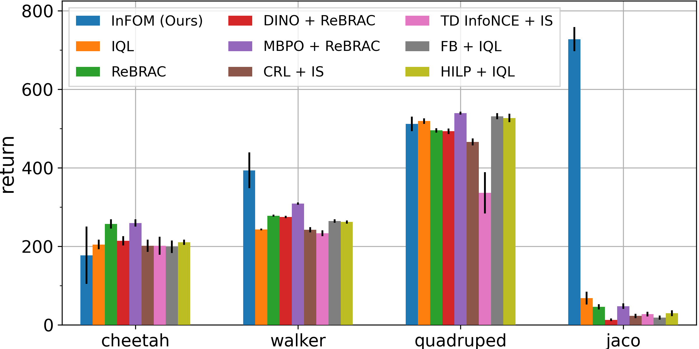
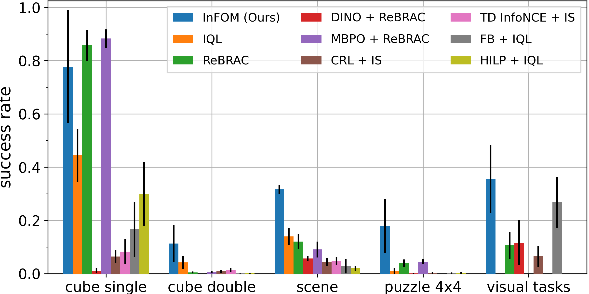
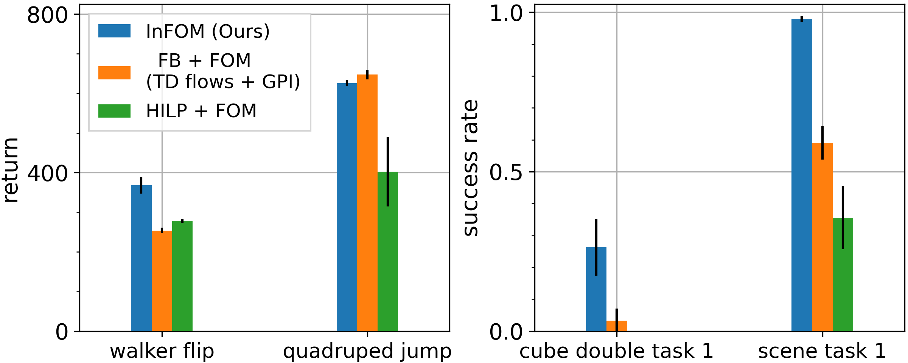
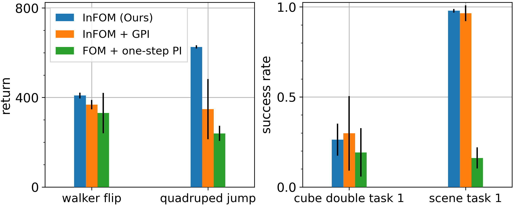

Intention-Conditioned Flow Occupancy Models
Overview
While prior methods often learn a model that predicts the immediate next observation, we build a flow-matching model that predicts many steps into the future, conditioning on different user intentions. We call our method intention-conditioned flow occupancy models (InFOM).
(Left) The datasets are collected by users performing distinct tasks. (Center) We encode intentions by maximizing an evidence lower bound of data likelihood, (Right) enabling intention-aware future prediction using flow matching.
Ideas
Pre-training
-
Given reward-free pre-training datasets \(D\) containing consecutive state-action pairs \((s, a, s', a')\), we infer the latent intention \(z \in \mathcal{Z}\) using the encoder \(p_e(z \mid s', a')\) and predict the occupancy measures of the future state \(s_f\) using the occupancy models \(q_d(s_f \mid s, a, z)\).
-
We maximize an evidence lower bound (ELBO) of the data likelihood to jointly optimize the encoder \(p_e(z \mid s', a')\) and the decoder \(q_d(s_f \mid s, a, z)\) using flow matching:
\[\max_{p_e, q_d} \mathcal{L}_{\mathrm{Flow}}(q_d, p_e) + \lambda \mathbb{E}_{(s', a') \sim D} \left[ D_{\mathrm{KL}}( p_e(z \mid s', a') \parallel p(z) ) \right],\]where \(p(z) = \mathcal{N}(0, I)\) is an uninformative Gaussian prior.
-
To predict future states across trajectories (dynamic programming), we adopt the SARSA variant of the TD flow loss (Farebrother et al.) to learn the vector field \(v_d: [0, 1] \times \mathcal{S} \times \mathcal{S} \times \mathcal{A} \times \mathcal{Z} \to \mathcal{S}\) of our flow occupancy models:
\[\begin{align*} \mathcal{L}_{\text{SARSA flow}}(v_d, p_e) &= (1 - \gamma) \mathcal{L}_{\text{SARSA current flow}}(v_d, p_e) + \gamma \mathcal{L}_{\text{SARSA future flow}}(v_d, p_e), \\ \mathcal{L}_{\text{SARSA current flow}}(v_d, p_e)&: \text{reconstruct the current state $s$}, \\ \mathcal{L}_{\text{SARSA future flow}}(v_d, p_e)&: \text{bootstrap the future state $s_f$}. \end{align*}\]
Fine-tuning
-
We estimate a set of intention-conditioned Q functions on reward-labeled datasets \(D_{\text{reward}}\) during fine-tuning.
\[\hat{Q}(s, a, z) = \frac{1}{(1 - \gamma) N} \sum_{i = 1}^N r \left( s_f^{(i)} \right), \, s_f^{(i)} \sim q_d(s_f \mid s, a, z), \forall \: (s, a) \in D_{\text{reward}}, \: z \in \mathcal{Z}\] -
We then utilize an implicit generalized policy improvement procedure to extract a policy.
\[\begin{align*} \mathcal{L}(Q) &= \mathbb{E}_{(s, a) \sim D_{\text{reward}}, \: z \sim p(z) } \left[ L_2^{\mu} \left( Q(s, a) - \hat{Q}(s, a, z) \right) \right], \\ \mathcal{L}(\pi) &= -\mathbb{E}_{(s, a) \sim D_{\text{reward}}, a^{\pi} \sim \pi(a^{\pi} \mid s)} [Q(s, a^{\pi}) + \alpha \log \pi(a \mid s)], \end{align*}\]where \(L_2^{\mu}(x) = \lvert \mu - \mathbb{1}(x < 0) \rvert x^2\) is the expectile loss with \(\mu \in [0.5, 1)\) and \(\alpha\) controls the behavioral cloning regularization strength.
Domains
-
Four domains from the ExORL benchmarks: \(\texttt{cheetah}\), \(\texttt{walker}\), \(\texttt{quadruped}\), \(\texttt{jaco}\), including 16 state-based tasks.
-
Four domains from the OGBench benchmarks: \(\texttt{cube single}\), \(\texttt{cube double}\), \(\texttt{scene}\), \(\texttt{puzzle 4x4}\), including 20 state-based tasks and 4 image-based tasks, to evaluate our algorithms.
Evaluation on ExORL and OGBench tasks
 
-
We compare InFOM to eight baselines learning different models, measuring the performance on downstream tasks after fine-tuning.
-
We conjecture that the baselines fail on these more challenging OGBench tasks because of the semi-sparse reward functions.
-
InFOM learns an expressive generative model along with the GPI-like policy extraction strategy to better exploit the high-reward region of the state space.
Ablation study
Comparison to prior intention encoding mechanisms

Compared with prior intention encoding mechanisms based on unsupervised skill discovery (HILP + FOM) or successor feature learning (FB + FOM), InFOM is a simple and performant way to infer user intentions.
Comparison to alternative policy extraction strategies

Comparing InFOM to alternative policy extraction strategies based on the one-step policy improvement, our proposed method is more efficient (\(44\%\) higher performance) and robust (\(8 \times\) smaller variance).
Citation
@article{zheng2025intention,
title={Intention-Conditioned Flow Occupancy Models},
author={Chongyi Zheng and Seohong Park and Sergey Levine and Benjamin Eysenbach},
journal={arXiv preprint arXiv:2506.08902},
year={2025}
}